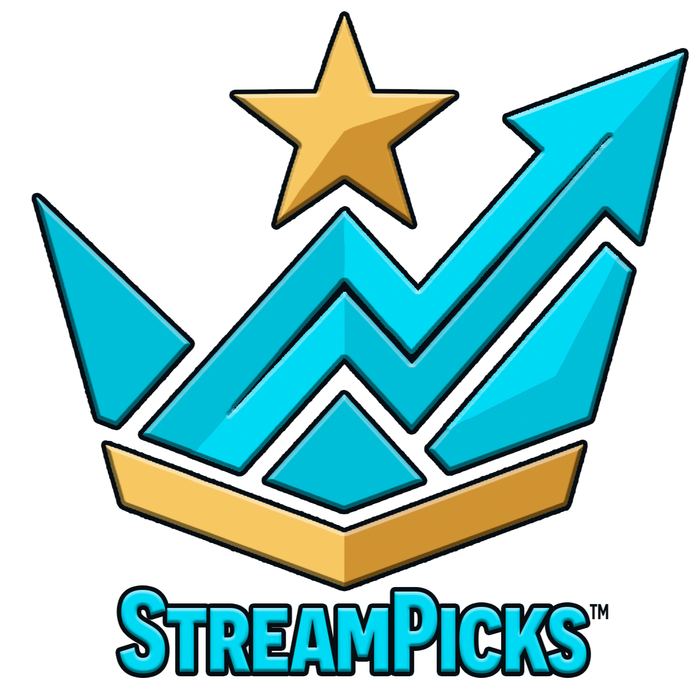
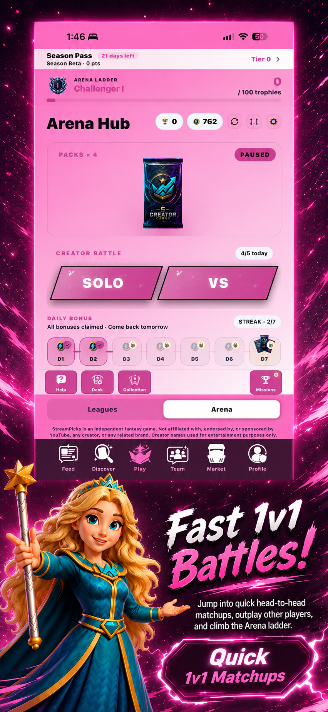
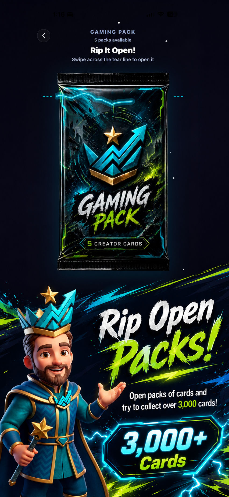
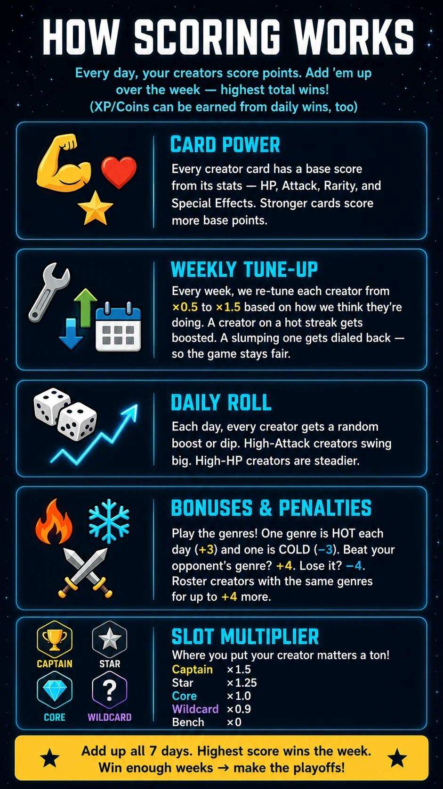
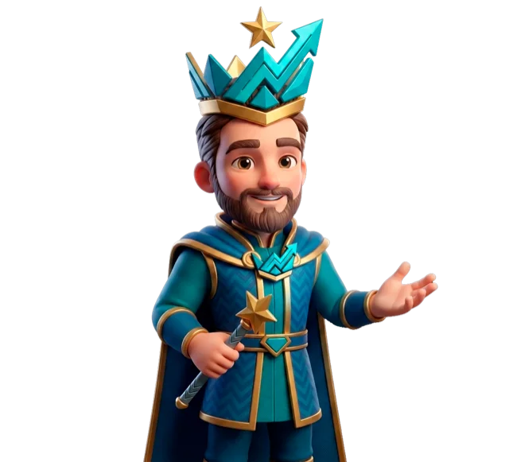
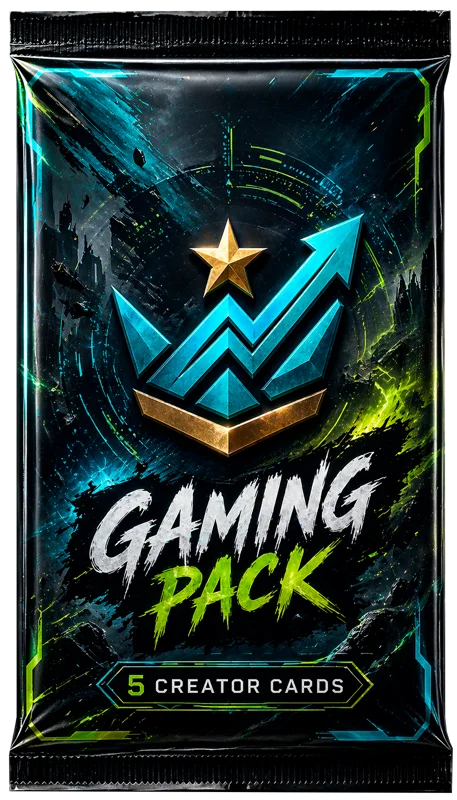
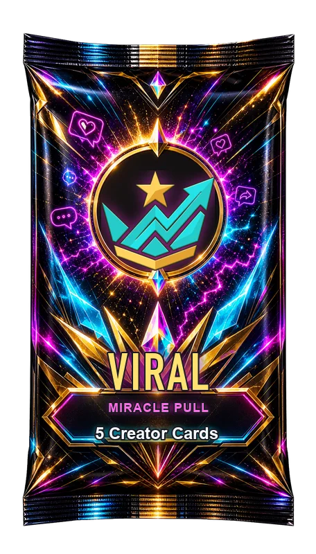

Fact sheet
- Developer
- Taylor's Tech Solutions LLC (solo developer)
- Based in
- Gans, Oklahoma, USA
- Platforms
- iPhone and Android
- Price
- Free to play. Optional StreamPicks+ at $4.99/month or $49.99/year
- Genre
- Collectible card battler with fantasy leagues
- Rating
- 13+
- App Store
- apps.apple.com/app/id6760561274
- Google Play
- app.streampicks.mobile
- Built with
- Expo / React Native and Firebase
- Press contact
- streampicksapp@gmail.com
About the game
Short version: StreamPicks is a free mobile collectible card game where every card is an internet content creator and the attacks are creator culture: Go Viral, Go Live, Demonetized. Collect 1,000+ creators across 12 genres, battle 1v1 in the Arena, and draft a fantasy league with friends.
StreamPicks is a trading card game about the internet itself, built entirely by one person. Every card is a content creator, and the moves are creator culture turned into game mechanics: Go Viral, Go Live, Demonetized, Callout Culture.
All 1,000+ cards were statted and balanced by hand. The holographic foils are real-time GPU shaders that shift as you tilt the phone, and pack opening is tuned frame by frame.
Players battle 1v1 in the Arena against friends, matched opponents, or a 50-stage solo Career. In Leagues, friends draft creators and score points from real public YouTube view momentum, like fantasy football for YouTube. Monthly seasons, a Season Pass, and Teams round it out.
Every card can be earned through play. Packs come in six rarities with published drop rates and pity timers, and StreamPicks+ adds convenience and cosmetics, never wins.
Key features
- Arena: fast 1v1 card battles with PvP matchmaking, friend battles, Solo play, and a 50-stage Career.
- Leagues: season-long fantasy drafts scored on creators' public YouTube view momentum.
- Packs: six rarities, real-time holographic foils, published drop rates, and pity timers.
- Social: Teams, monthly seasons, and a Season Pass.
- Fair by design: every card is earnable through play, with no pay-to-win.
About the developer
Taylor is a school district IT Director in Eastern Oklahoma who builds StreamPicks at night under Taylor's Tech Solutions LLC. The code, the balancing of every card, the art pipeline, and the servers are all one person's work. Taylor is happy to talk about building a live-service game solo, designing fair packs, and fitting a game around a full-time job and a family.
Logos and screenshots
Click any image for the full-size file, or grab everything at once in the press kit zip. You're welcome to use these to cover StreamPicks. Please don't alter the logo.















About the creator cards
StreamPicks is an independent game. It is not affiliated with, endorsed by, or sponsored by YouTube, any creator, or any related brand. Card art is original, transformative artwork, and card stats are fictional and balanced for gameplay. Creators who would rather not appear can request removal on our takedown page.
Press contact
Email streampicksapp@gmail.com for interviews, review access, gameplay captures, or anything else. Happy to set up an account for you to play.